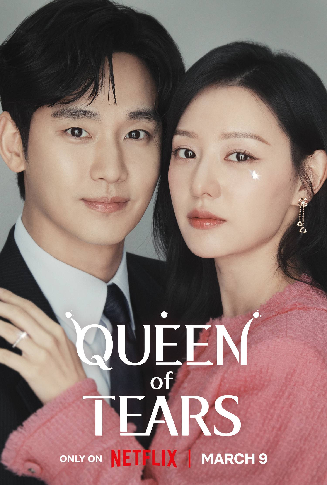

Here’s my On Repeat Spotify playlist! Enjoy the tunes that keep me motivated and happy.
| NAME | GENRE | RATING | REVIEW |
|---|---|---|---|
| 
QUEEN OF TEARS |
Romantic Comedy | 8/10 | Queen of Tears really caught my attention with its mix of heartfelt drama and light comedy. The chemistry between the leads felt genuine, and the emotional depth was moving. However, it sometimes tried to juggle too many themes at once. Still, its charm and strong performances made it worth watching. |
|
A SHOP FOR KILLERS |
Action Drama | 10/10 | I enjoyed this one quite a bit. It's straightforward and packed with action. The story follows a young woman who, after her uncle's death, learns he was an arms dealer and must fend off various underworld figures attempting to seize control of the business. It's a classic cat-and-mouse action thriller that made for an entertaining afternoon. |

TWINKLING WATERMELON |
Romance Teen, Musical Drama | 7/10 | Twinkling Watermelon was a delightful surprise. This sugary-sweet teen drama follows a time-traveling boy who befriends his young father and plays matchmaker for his future parents. Though overly cute at times, its charm shines through, especially with the heartwarming father-son friendship and lovable characters. A perfect feel-good watch! |